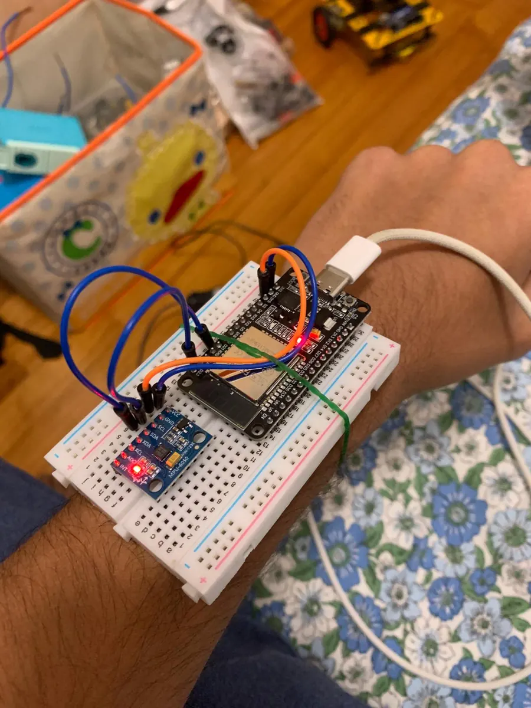
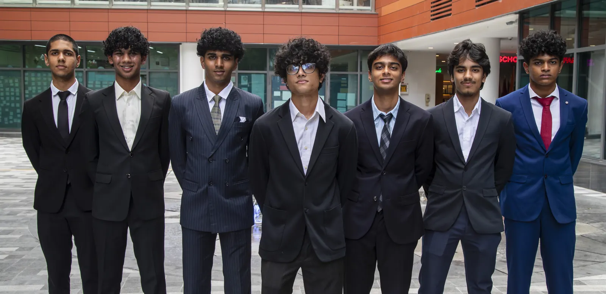
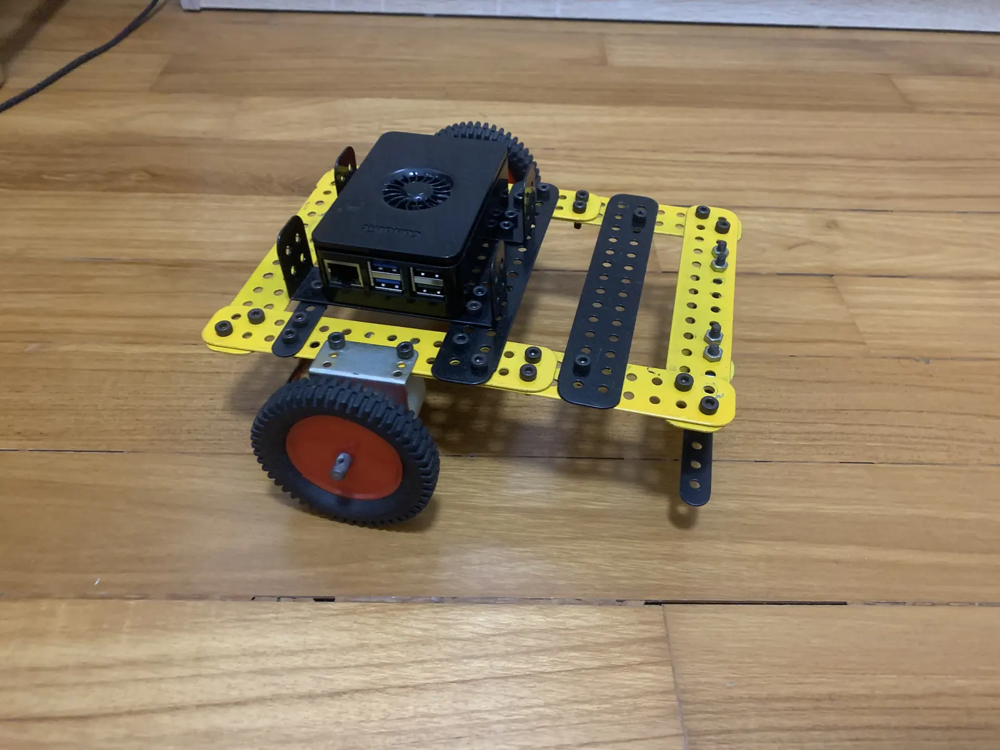
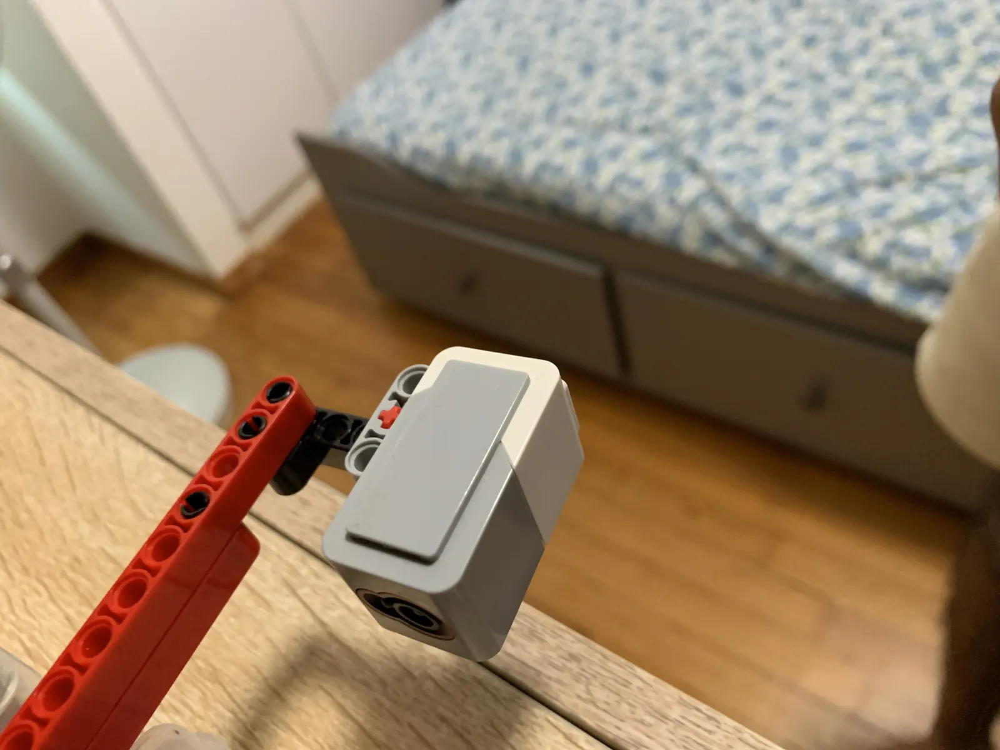
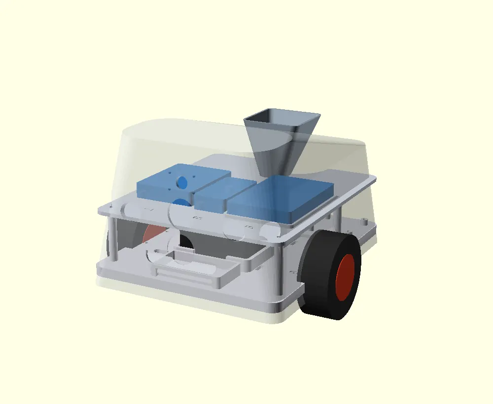

GIIS Singapore · Class of 2027
About
I started building with Lego at 6 and now lead a six-person team building a 12-DOF quadruped robot — less about choosing projects and more about gradually pushing what I could make. Now in Year 2 of the IB Diploma at GIIS Singapore, 40/42 in Year 1, applying to EECS and Computer Engineering programs across the US, UK, Singapore, and Europe.
Academic Record
Education
IB Diploma Programme (IBDP)
Global Indian International School · Singapore
HL Subjects
SL Subjects
1520 · M 780 · E 720
5 · 2026
In Progress · 2026
100 / 100 · Final Exam
92 / 100 · Final Exam
A1 & A2 · Certified
HTML & CSS · Certified
IGCSE
Global Indian International School · Singapore
Extended Maths · Additional Maths · Computer Science · Physics · Chemistry · Biology · French · FLE · English Literature
Industry Experience
Internships
KPIT Technologies
Intern – AI & Digital Solutions
6-week internship focused on artificial intelligence and digital transformation solutions. Gained hands-on exposure to enterprise-grade AI implementation and software development practices.
Bonji Naturals
Mentored Intern – BuildUp Internship Program
Selected for the competitive BuildUp Mentored Internship Program (Summer 2026). Applying AI and data analytics skills to real-world product and business challenges within the start-up ecosystem.
Selected Work · Achievements
Projects
LYNX
12-DOF quadruped · team of 6 · based on Rune Harlyk's open-source SpotMicroESP32-Leika · build starts Jul 2026 · NRC Singapore, Aug 2026.

Wearable · HCI
LYRA
Gesture wearable · on-device 2-stage classifier · BLE-HID

EdTech · Live · 200+ students
FIRE
AI opportunity platform · IB-funded · 3 schools

Robotics · Computer Vision
CANIS
Welfare-first behaviour robot · ArUco vision · state machine

Detail · EV3 Bridge
LYRA
ESP32-C3 · MPU-6050 · EV3 robot-arm bridge

CAD · Mechanical
CANIS
Multi-controller architecture · treat dispenser
Deep dives: LYRA case study · CANIS case study · LYNX case study
Other Projects
What I Work With
Skills & Technologies
Programming
AI / ML & Hardware
Platforms & Tools
Languages
Recognition
Awards & Competitions
Physics Bowl
Asian Bronze Award — Div 2, Senior
Invited to AAPT Physics Bowl Asia Camp (Jul 2026).
Singapore Math Olympiad
Final Round Qualifier + Silver
Qualified for and competed in the SMO Final Round.
Euclid Competition
2nd in School
International senior mathematics competition.
Sign Language Converter
1st Place (Team)
Sign language to English / dyslexia converter application.
Intl. Chemistry Competition — Bronze · Final Round
3rd Place / 54 schools · Senior citizens accessibility app
1st Place · Maze-navigating robot
USD 1,200 Grant (FIRE platform)
Academic Excellence in IGCSE, 2nd Prize
GSF Group merit scholarship (IGCSE performance)
Theology Category · Shortlisted
Beyond the Lab
Extracurriculars
Applied Physics Club (PULSE)
2025 – PresentFounder & Vice-President
Founded the Applied Physics Club, organised interschool physics competitions and real-world challenge events. Represented at the Real World Challenges Convention (1st place).
Math & Computing Club
2025 – PresentHead of Academics
Led academic initiatives, facilitated peer learning sessions, and coordinated club programming activities.
GIIS Tech Club
2025 – PresentAcademic Team Member
Delivered programming workshops for lower secondary students (HTML, CSS, Python) — 180+ students reached. Co-organised the school's annual Hackathon.
Model United Nations
2020 – 2026 · 4 MUNsDelegate — Crisis Committee · Verbal Commendation
Earned Verbal Commendation at Grade 11 MUN. Participated in 4 conferences across school career, developing diplomacy and public speaking skills.
World Vision
Ongoing · 14+ hrsVolunteer Tutor — English & Mathematics
Teaching English and Mathematics to underprivileged children every Friday.
GIIS Law Summit & Aviation Club
2024 – PresentMock Trial Delegate · Event Photographer · Finance & Logistics
Delegate in mock trial proceedings and official event photographer at the Law Summit — won school photography competition in 2024 and 2025. Finance & Logistics team for the Aviation & Astronomy Club.
Sports
OngoingCricket Vice-Captain · Swimming · Krav Maga
Vice-Captain of inter-house cricket team. SwimSafer Gold certified swimmer. 2+ years of Krav Maga self-defence training.
The Journey
My Story
First MUN & Competitive Math
Joined my first Model United Nations conference and started competing in mathematics — sparking a habit of showing up to hard rooms.
Taught Myself Python
Started self-learning Python in Grade 9. Built my first AI assistant — a simple NLP chatbot that made me realize software could do real things.
IGCSE 8A* · Applevate · Real World Challenges
Finished IGCSE with 8A* and an ICE Distinction. Placed 3rd out of 54 schools at Applevate with a senior-citizens app, and won 1st at the Real World Challenges Convention with a maze robot.
Founded PULSE · IBDP Year 1: 40/42 · IB Grant
Founded the Applied Physics Club, scored 40/42 in IBDP Year 1, and secured a USD 1,200 IB Global Youth Action Fund grant to build the FIRE platform.
Physics Bowl Bronze · SMO Silver · KPIT · LYNX
Physics Bowl Asian Bronze, SMO Final Round Silver, interned at KPIT Technologies in AI & Digital Solutions, and kicked off LYNX — a 12-DOF quadruped (team of six, build starting July) targeting NRC Singapore in August.
IBDP Year 2 · Applying to EECS & Computer Engineering
Completing the IB Diploma while building CANIS, LYRA, and LYNX. Applying to leading EECS and Computer Engineering programs in the US, Singapore, UK, and Europe.
Say Hello
Let's connect.
Interested in talking about engineering, research, or collaboration? I'd love to hear from you.